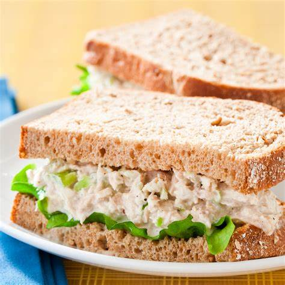

Tuna Fish Salad Sandwhich
Super quick, super yummy!
Ingredients
- 2 6 ounce cans of tuna. Drain unless specficed by can
- 1/2 cup of chopped celery
- 1/4 cup of chopped onion
- 1/2 cup mayonnaise
- 1/4 teaspooon of salt
- 1/4 teaspoon of pepper
- 8 slices of bread
Instructions
- In a medium bowl, mix the tuna, celery, onion, mayonnaise, lemon juice, salt and pepper
- Spread tuna mixture on 4 bread slices. Top with remaining bread slices
Chef's Advice: Tuna fish salad sandwhichs are hard to mess up, just go with confidence!